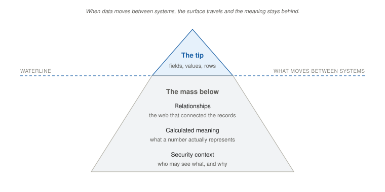

What You Need to Know About AI Before You Design Anything
Before I built products, I practiced medicine. I trained in anesthesiology, and the moment that stayed with me was a heart transplant, where I stood at the head of the table keeping a patient alive while the surgeons worked. What I remember is not the surgery. It is the room. Every surface was a display, and every person was watching a different slice of the same patient: the surgeon on anatomy, me on the hemodynamics, the perfusionist on the bypass, a nurse counting pads on a whiteboard to estimate blood loss. No one held the whole picture. The patient lived because the supervision was designed, who watched what, who could act alone, who had to call for help.
That room is the closest thing I know to what you are about to build. An agentic AI system is not one clever actor. It is a set of capabilities, each working a slice of the problem, supervised by humans whose attention is finite, consequential in ways that compound. Design the capabilities and skip the supervision, and you have built an operating room where everyone sees their own monitor and nobody has agreed on who calls the code.
This chapter gives you the working vocabulary to design that supervision. You do not need to become an AI engineer. You need enough to say what the system should do, ask your team the right questions, and catch the failures before they reach production. Read it at a steady pace; these terms are the foundation the rest of the book stands on, and they come back in every chapter.
The Words You Need
The field throws a lot of vocabulary at you, and most of it you can let pass. A small set you cannot, because every design and governance decision later in this book sits on top of it. Think of this section as your foundation; as the chapters go on they will add a few more terms to it, and by the end you will have a working glossary you built yourself.
Start with the two words that run through every conversation and every invoice: prompt and token. The prompt is everything you hand the model to work from, the instruction, the question, and increasingly the documents you retrieve and the running conversation, the whole input it conditions its answer on. The token is the unit the model reads and writes in, a chunk of text a few characters long, smaller than a word; a page runs several hundred tokens. You care about tokens for one blunt reason: they are the unit you pay in and the unit the model’s attention is spent on. Every call costs tokens going in and coming out, and as the cost chapter shows, that, not the model’s sticker price, is what drives the bill.
Now the shift that the whole book turns on, and the one idea worth stopping for.
For twenty years your software followed rules you wrote: if the order is over ten thousand dollars, route it to a manager. You defined the rules; the software ran them, the same way every time.
An agent does not run your rules. It reasons toward a goal you give it and decides the steps itself. That is the entire shift, from a system that executes what you specified to one that judges what to do. Everything new, the power and the risk, follows from it.
Rules work when you can write them down in advance. They break when the problem is too large or too ambiguous to enumerate, when the right call takes judgment rather than a decision tree. Judgment learned from data instead of hand-coded is what machine learning makes possible, and the engine behind today’s agentic wave is one particular kind of it: the large language model, or LLM. An LLM is a neural network trained to predict the next token from patterns it learned across vast amounts of text; GPT, Claude, and Gemini are LLMs. It does not understand text the way you do. It is extraordinarily good at pattern-matching, and without grounding it produces correct and incorrect answers with equal confidence. That last property is the one to hold: an LLM is capable of impressive reasoning and of confident, plausible errors, and designing around that gap is your job, not the model’s.
This is also where non-determinism comes from, the first of the five ideas. Even configured for low randomness, the same prompt can produce different outputs across runs, because retrieval, batching, and infrastructure routing all introduce variability. That is not a defect to be fixed; it is a property of the technology, and it changes how you test, monitor, and trust the system. One passing test does not prove the behavior is fixed. The evals chapter takes this up in full.
Two more distinctions, then you have enough to start. The first is agent versus agentic, which get used loosely and are not the same thing. An agent is the thing: a system that decides what to do next, takes the action, sees the result, and continues toward a goal, as opposed to a tool, which does what you invoke and stops. A chatbot that answers is a tool. A system that reads the ticket, updates the record, emails the customer, and escalates when it has to is an agent. Agentic is the adjective for the property that makes it one: autonomy, pursuing a goal across steps, acting without a human checking each move. A product is agentic to the degree that it acts on its own between the points where a person looks, and the design work, supervision, speed, accountability, scales with how agentic it is, not with whether someone stuck the word “agent” on the feature. Worth knowing too: “the agent” is usually a simplification. Real systems are often several agents working as a team, one routing the task, one drafting, one checking it against policy, sometimes running on different models. When this book says “the agent,” read “each agent, and the team.”
The second distinction is the stack, the working picture you need to ask your engineers the right questions. It has four layers, and most teams only talk about the first three. The model is the LLM itself, selected from a provider and called by API; its behavior can change when the provider updates it, with no deployment on your side, which is a fact you will return to in testing and governance. The orchestration layer is the code that coordinates the agent, how it breaks a goal into steps, picks tools, handles errors, carries context across a workflow, and most of the engineering, and most of the UX-shaping decisions, live there. The tools layer is the set of external systems the agent can touch, APIs, databases, message channels, and every tool is a permission: this is where capability becomes consequence. And the context layer is what the agent reads before it acts, which most teams design by accident and which is the single largest source of production failures. We will come back to context, because it is where the real trouble hides.
A word on that tools layer, because it is the most concrete expression of what an agent is allowed to do. Every system the agent can reach is a permission to act, and the explicit, enumerated, logged list of what it can and cannot reach is its real authority. A narrow, named boundary is safe; an undefined one is how an agent ends up sending emails nobody authorized or modifying records nobody intended. Vendors slice this up differently, “tools,” “connectors,” and skills, which usually means a packaged, reusable capability that bundles a prompt with one or more tools. (Hold onto “skill,” it comes back: later in the book I will recommend that when you find yourself running the same agentic activity over and over, you turn it into a skill, name it, and add it to your own toolkit, and we will grow this vocabulary as we go.) When a vendor says your agent ships with three hundred skills, the PM question is which three hundred permissions you just inherited, and which the agent may combine in ways nobody planned. The plumbing that lets an agent discover and call all of this is increasingly a shared standard called MCP, the Model Context Protocol; it simplifies the wiring, but it does not remove your job to define and log the permissions an agent actually holds.
Finally, context, the part most likely to fail you. The stack tells you what the agent can do; it does not tell you what it reads first. The best-known way to supply that reading is retrieval-augmented generation, RAG: instead of relying on what the model memorized in training, the system retrieves relevant material from your own data at the moment of the question and hands it over to reason on, your policies, your customer’s history, this morning’s prices. The 2026 version is agentic RAG, where the agent runs retrieval as a loop, query, judge whether it has enough, refine, query again, rather than a single lookup. RAG is the common path for unstructured text, but it is not the only one, and in enterprise systems it is often not the main one: just as often the context comes from structured data, a SQL query against a governed data product, a service call, a join across records, returning rows the agent reasons over. Whichever path it travels, the durable point is the same: the model is only as right as what it is handed, so the quality of the data and the retrieval often matters more than the quality of the model, and you should treat the knowledge source, not the model, as the thing worth investing in.
That is the foundation. Some of these names are perishable, MCP, today’s model, the current pricing will be renamed within a year or two, but the shape under them is not: rules giving way to reasoning, the four layers, agent versus agentic, and the fact that an agent is only as good as what it reads. Learn the current tools the way you learn this quarter’s competitors, necessary, perishable, and not where your durable skill lives.
Metrics, as Product Decisions
A handful of metrics get cited around AI, and most of them come from classifier evaluation. You do not need to be a statistician. You need to know what each one means as a product decision, because that is the form they take when they land on your desk.
Sensitivity (also called recall) is the share of real positive cases the model catches; turn it up and you catch more real cases and raise more false alarms. Specificity is the share of true negatives it correctly dismisses; turn it up and you get fewer false alarms but miss more real cases. AUC is a single number for how well the model separates the two across all thresholds, 1.0 is perfect, 0.5 is a coin flip. Those are the data team’s words.
Here is the one that is actually yours: the threshold, the point at which the model decides to act. It gets handed to the data science team as if it were a technical setting. It is not. Only you know what a false positive costs your users versus what a missed case costs them. A fraud model set too aggressively blocks legitimate customers; set too loosely, it lets fraud through. The right threshold reflects your cost structure, not the number that maximizes a statistic. So when your team brings you a confusion matrix, the question to bring back is: what does a false positive cost the user, what does a missed case cost the person affected, and where on that curve are we choosing to sit? The evals chapter shows where these single-step metrics break down once an agent strings many steps together. For now, just hold that they are product decisions before they are statistics.
Tool or Agent: A Design Choice, Not a Capability
If you have followed AI casually, you probably picture a smart assistant: summarize this, draft that, answer this. That is AI as a tool. The human acts, the AI helps, the human keeps control of every decision, and the worst case is a bad suggestion you ignore.
An agent is a different thing, and the difference is not how capable it is. It is about authority and consequence. When AI is an agent, the system acts and the human supervises. The agent makes decisions and takes actions that change real systems, sometimes in ways that are hard or impossible to reverse. The worst case is no longer a bad suggestion. It is a bad decision, executed on its own, repeated at scale, discovered late.
The same underlying model can be either one. Whether you have a tool or an agent is a design choice about how much authority you grant, and that choice sets the entire risk profile of your product. Designing a tool is mostly a UX problem: make the suggestions useful, make the interface clear, measure adoption. Designing an agent is a systems problem: define the authority boundary, design the supervisory experience, build the recovery path, instrument what you watch. You are designing for a system that acts when nobody is looking, and the whole job is making sure that when nobody is looking, the right things still happen.
The next chapter gives this its own name. Channel 1 is the agent itself. Channel 2 is the human system that supervises it. Both are products. Both need deliberate design. Most of this book is about building the second one on purpose.
What the Agent Reads (and Why It Fails Here)

The stack told you what the agent can do. It does not tell you what the agent knows, and in real deployments, that is where most failures come from. Not bad reasoning, not broken tools, bad context: incomplete data, missing relationships, a stale index, the wrong record retrieved, a data product that was built without the meaning the agent needs.
The failure is common enough to have a canonical shape. Picture a composite drawn from several large-retailer pilots of the last couple of years: a shopping assistant launched on top of catalog data, announced with fanfare, quietly rolled back months later when the results stopped justifying the cost. The model was fine. The model was great. The context was missing. A good recommendation needs more than a product description, it needs inventory state, location pricing, promotion logic, what this household already bought, the substitution rules, the returns policy by category, constraints that live in operating systems and only mean something in combination. None of that traveled with the product data into the shiny new platform. The assistant was confidently wrong in ways nobody could have caught by testing the model alone.
The lesson is not that the project was a bad idea. The lesson is that context is the product. Intelligence without context is just confidence.
There is a useful way to picture why this keeps happening, and it is worth carrying with you.
When data moves between systems, the meaning stays behind. What travels is the surface, the number, the row, the field. What stays behind is everything that made it interpretable: the relationships, the calculation behind a “revenue” figure, the security context, the organizational conventions, the authority a record carried in its home system. Every enterprise data migration of the last twenty years has rediscovered this. Agentic AI makes it newly expensive, because an agent acting on decontextualized data produces confident, plausible, wrong output at scale.
Your job: name what context must travel with the data for this agent, and refuse architectures that assume the agent will reconstruct it on its own.
Three things slip below the waterline whenever enterprise data moves without deliberate care. Relationships: in the source system a purchase order is tied to a vendor, a contract, a budget line, an approver, a shipment; export it as a row and those ties are gone. Calculated meaning: a “revenue” field on a dashboard is the output of a calculation, not a stored fact; export the field and the calculation is gone. Security context: who may see a record depends on role and region and relationship in the source system; export the record and that logic stays home. An agent reasoning over exported data is an agent reasoning without context, and your job is to make the context travel with the data, or to bound the agent to decisions that do not need it.
So what do you actually do about it? A few working principles, each one a question you can put to your team this week:
- Receiver-first design. Start from the decision the agent has to make and work backward to the data, the retrieval, the schema. Most data products fail because they are built bottom-up, the source has these fields, so the product inherits that shape, and the receiver’s actual question never enters the design. Bottom-up gives you data products that are accurate and useless.
- Standard first, extension last. Use whatever vocabulary is standard in your domain, and extend it only where the standard genuinely does not cover your case. Every proprietary extension is a wall the next agent you integrate cannot see over. Accepting one without naming the cost is a five-year decision made on a one-sprint horizon.
- Design for incompleteness. The data real agents get in production is fragmented, late, and missing the pieces that would have made the call easy. Waiting for clean data has been the industry’s excuse for twenty years and has not produced clean data. Ship for what arrives: a minimum coherent evidence set per decision, explicit flags for what is missing so the agent’s confidence can be calibrated to the gaps, and retrieval decoupled from reasoning so a retrieval miss does not cascade into a confident wrong answer. If the team’s answer to a context gap is “we are waiting for the data warehouse,” the agent is not ready to ship.
- Know your semantic layer. Ask, in week one, “what is the thing that holds our entities and their relationships, the customers, suppliers, products, contracts, and how they connect, and who owns it?” Whether it is a knowledge graph, a set of governed data products, or a hybrid that stitches structured joins to retrieval, its presence is what lets an agent reason across your data instead of within whatever single slice it happened to grab. The PM who asks that question early has a very different six-month trajectory than the one who does not.
One last note for this chapter: agents also carry context across time, short-term memory inside a session, longer-term memory across sessions. What the agent remembers about a user or a workflow is a designed product surface, and a governance surface too, what may it remember, for how long, with what consent, and how does someone review or delete it. Most teams build this by accident. Designing it on purpose is a later conversation. Naming that it exists is this chapter’s job.
The Supervision Paradox
The fifth idea is the one most likely to catch you off guard, so sit with it for a second. Every agent that needs a human supervisor depends on that supervisor staying sharp enough to supervise. And every agent used heavily erodes exactly that sharpness. The framework that governs the deployment, the regulation, the operating procedure, the design pattern, assumes the supervisor stays competent. The deployment itself quietly makes them less so.
This is not new. Decades ago, in work on industrial control rooms, an engineer named Lisanne Bainbridge described the irony of automation: the more reliable the automated system, the more the operator’s monitoring skill withers, so when the system finally fails, it fails in front of the person least prepared to catch it. She was writing about process plants. The mechanism is general, and it is now playing out across your teams on different clocks.
Your engineers feel it first. When the model writes the code and they only review it, the muscle that catches a subtle bug, built by writing and debugging code yourself, fades, even as the volume to review climbs past what anyone can keep up with. The bottleneck moves from “we cannot write code fast enough” to “we cannot review it fast enough,” and the reviewer is getting duller exactly as the pile gets taller. Your support team feels it next, and faster, because their skill is built on volume and the agent removes the volume: once the agent handles the routine cases and escalates only the hard ones, the supervisor only ever sees the agent’s escalations, and their sense of “what does a quietly-wrong call even look like” narrows around the sample the agent chose to show them. The cases the agent handles invisibly badly never reach the queue, so the supervisor cannot calibrate against them. And anywhere a person is set to watch a machine do the work, the same thing happens on its own timescale.
The agent that does the work degrades the human who supervises it, on a predictable clock, roughly a year for skilled technical work, a few months for high-volume operational work. The supervisor’s competence erodes during the same period the agent’s volume scales, so the reviewer falls behind exactly as the cases get harder to judge.
The PM move: treat supervisor competence as a resource you spend, not a constant you can assume. Design to preserve it, keep some real work flowing to the humans on purpose, surface the cases the agent handled invisibly, and never assume the person in the loop is the sharp version of themselves you pictured at launch.
I have seen the clinical version of this up close, and medicine is honest enough to publish its failures: give experienced doctors an AI that highlights what to look for, take it away a few months later, and their unaided skill has measurably dropped. The brain offloads the task it no longer has to do; aviation learned the same lesson long ago and answered it by requiring pilots to fly manually on a schedule, so the skill is still there on the day the automation quits. No other profession touched by AI has built that yet. The point for you is not the medicine or the cockpit. It is that the erosion is real, it is faster than you expect, and your dashboard will not show it to you, because the dashboard measures the agent, not the human watching it. You have to design for it on purpose. (The change-management chapter takes up the operational side: you usually get one product cycle, sometimes two, before your organization no longer has anyone who can tell you what the agent is doing wrong.)
This idea threads through everything ahead, so notice it as it returns. Approval is not the supervisor re-deriving the agent’s reasoning, which they often cannot; it is authorization within a designed boundary (the design chapter). Eval coverage is not “is the agent good in the abstract” but “can the supervisor catch the failures the agent cannot catch in itself” (the evals chapter). Production observation is not a dashboard for a sharp operator; it is an instrument for a steadily compromised one (the observation chapter). And change management is not training; it is designing the recurrent practice that holds supervisory skill stable against the deployment that erodes it (the change-management chapter). None of this means do not use AI. It means the safety model everyone is reaching for assumes a supervisor who stays the same, and the supervisor does not.
Observability, in One Page
One more piece of vocabulary, because the observation chapter treats it at length and it pays to meet the words now.
Observability is being able to answer questions about a running system without having anticipated those questions in advance. The traditional monitoring stack was built for deterministic systems, where the same input should produce the same output and “green” means the system is behaving as designed. That contract breaks for agents, because a synthetic check can confirm the endpoint is reachable and the response came back fast, and tell you nothing about whether the agent’s judgment on the next real request is correct. A two-hundred-millisecond response that takes the wrong action is worse than a five-second one that pauses for a human. The signals invert: latency and throughput stop being the point, and the questions become, did the agent act, was the action authorized, was it correct, was it reversible, did a human have a chance to step in.
Three words are enough for now. A trace is the recorded path of a request through the system, for an agent, the goal, the steps it considered, the tools it called, what came back, the context it pulled, the action it took. When your team says “we have observability,” the first question is whether they can pull up the trace for any past agent action and reconstruct what happened. Second, the platform/PM contract: the platform emits the raw events, tool calls, approval pauses, recovery actions, confidence scores; you compose the metrics that matter, override frequency, unintended-action rate, task success rate, and the rest the observation chapter names. Most platforms emit the right events; few ship the composed metrics, and a vendor page claiming to is usually selling trace capture with a judge model on top, relabeled. The composition is your job, not the platform’s gift. Third, hold the line between infrastructure observability (is the plumbing working, mature, commodity) and behavioral observability (is the judgment correct, emerging, partial, often built on a judge model with biases of its own). Healthy skepticism on the second is the right posture; the monitor having the same weakness as the monitored is not hypothetical.
You now have the vocabulary to ask the right questions. Engineering owns the implementation. You own the questions, and the answers belong to both of you.
Use AI Everywhere, Then Use It Carefully
The single most useful thing you can do after reading this chapter has nothing to do with shipping a product. It is to use AI constantly, in and out of work, until its behavior stops surprising you. You cannot develop judgment about a probabilistic system by reading about it. You develop it by living with it, and you do not need to write a line of code or vibe an app to do that.
So make it a daily tool. Use it as a writing partner, and teach it your voice: feed it things you have written, tell it what you want to sound like, and correct it until the drafts come back in your register instead of the flat house style every model defaults to. Have it summarize your inbox and the morning’s news. Generate the image for a birthday card. Turn a sprawling task list into a table that sorts and groups itself. Stand up a small advisory council, a strategist, a skeptic, a domain expert, and put a hard decision to all three. And do not stay loyal to one: run the same question through Claude, Gemini, OpenAI’s models, Perplexity, and others, and notice where they diverge, because the differences between them, in tone, in what they refuse, in where they hallucinate, are exactly the intuitions you will need when you choose a model for a product.
One habit pays off faster than any other: at the end of a working day, ask the model what it learned about you, your preferences, your blind spots, how you like to work, and save what comes back as standing context it can read at the start of the next session. Most tools now have a place for this, a memory, a profile, a project instruction file. You are doing by hand, on yourself, exactly what this book teaches you to design into a product: the context layer is what makes the assistant useful, and curating it deliberately, rather than letting it accrete by accident, is the whole lesson in miniature. Any information worker, not just an engineer, can fold all of this into an ordinary day, and the person who has handled a hundred small AI interactions reads a vendor’s demo very differently from the person who has handled three.
Once it is a habit, add one refinement, because the habit has a failure mode. Out of the box, most assistants behave like a colleague who agrees with you too quickly: ask them to critique a plan and they list three strengths before the one weakness that matters, and you end up with a tidy version of what you already believed instead of the challenge that would have changed your mind. The fix is not a different model. It is a different configuration: give it a role, hand it a framework, tell it to surface your weakest assumption, and give it permission to refuse to help you write the thing you were going to write anyway. The toolkit chapter returns to this as a practice. The point here is just that the agent on your roadmap and the agent in your browser are the same probabilistic system, equally capable of confident, plausible, wrong answers, and the fastest way to get good at designing the first is to live with the second.
- Rules versus reasoning is the whole game: your software used to execute what you specified; an agent judges what to do. Every new power and risk follows from that.
- Agent versus agentic: an agent is the thing; agentic is the degree of autonomy. Design work scales with how agentic the product is, not the label.
- The four-layer stack is model, orchestration, tools, context. The tool boundary is the agent’s real authority; an undefined one is how it acts where nobody authorized.
- Context is the product. The Iceberg: the surface travels between systems, the relationships, meaning, and security context stay behind. Name what must travel.
- The Supervision Paradox: the agent that does the work degrades the human who supervises it. Treat supervisor competence as a resource you spend.